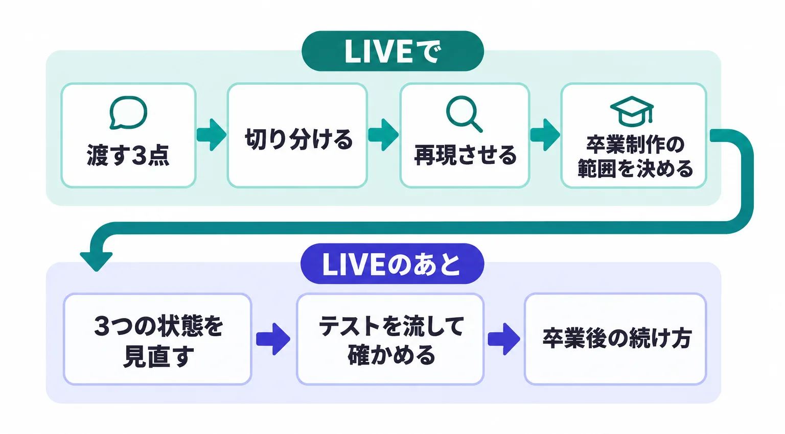
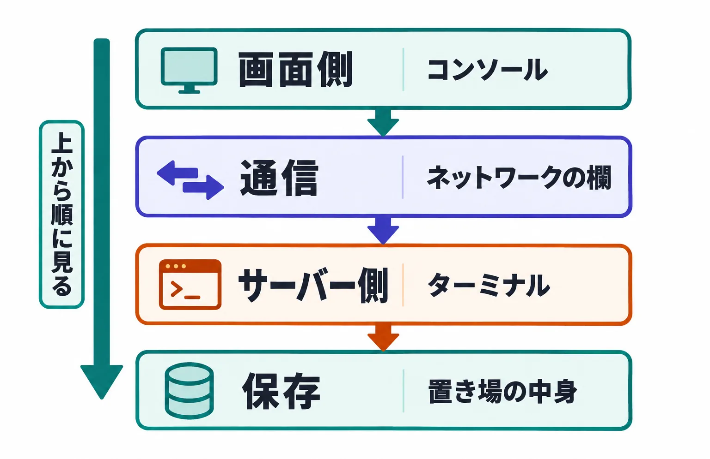
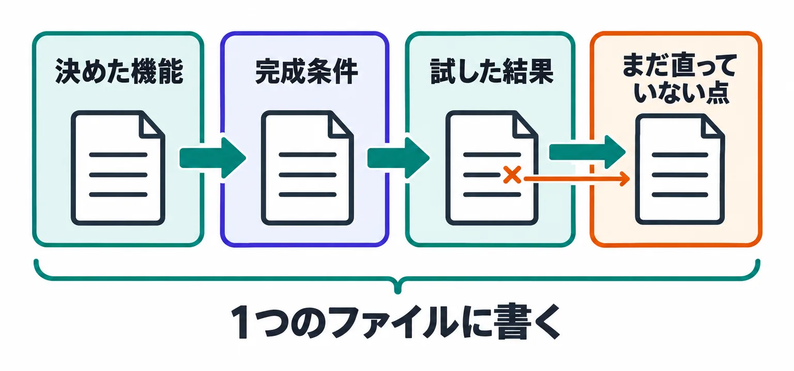

デバッグと卒業制作 ― 落ちないアプリに仕上げる

- 決める第1〜2回 オリエンテーション・要件定義
- 作る第3〜6回 モック → 動き → API 連携 → テスト
- 仕上げる第7回 デバッグと卒業制作
- 不具合を AI に渡す3点（症状・再現手順・期待する結果）を書けるようにする
- 画面側 → 通信 → サーバー側 → 保存 の順に、どこで止まっているかを切り分ける
- Claude Code に不具合を再現させ、直す前に4か所の表示を報告させる
- 卒業制作で扱う機能と完成条件を決め、docs/graduation.md を作る（ここまでが LIVE）
- LIVE のあと：NG を直し、3つの状態を見直し、テストを流して、試した結果と直っていない点を書く
- 不具合を1つ、症状・再現手順・期待する結果の3点で書ける
- 開発者ツールのコンソールとネットワークの欄、サーバーのターミナルを開いて、どの段階で止まっているかを言える
- Claude Code に再現させた報告の画面を、スクリーンショットで1件分取ってある
- docs/graduation.md に、決めた機能と完成条件が入っている
- 不具合ログに3件以上、直せなかったものも含めて書いてある（3件に満たないときは、見つかった分と、どこまで試したかを書いてある）
- 不具合を AI に渡すとき、何を渡せばよいかを3点で言える
- 不具合が画面側・通信・サーバー側・保存のどこで起きているかを、上から順に見て切り分けられる
- Claude Code に症状を再現させ、直す前に4か所の表示を報告させられる
- 「1件も無いとき」「処理中」「失敗したとき」の表示を、本物の AI のサービスや保存先につないだ状態で見直せる
- 直したあとにテストを流し、変えた操作と、それで影響を受けそうな前からの操作を、自分の手で押して確かめられる
- 卒業制作で扱う機能と完成条件を決め、試した結果と、まだ直っていない点を書ける
- 卒業後に、機能を足すとき・動かなくなったときの手順を言える
この回の地図
この回は7つの手順に分かれます。LIVE で進めるのは 1〜3 と、6 のうち「出すものを知り、範囲と完成条件を決める」までです。LIVE のあとは 6 の手順に沿って進め、4・5 はその中で開きます。7 は、卒業制作を出す前後に読んでおきます。


- 渡す3点 症状・再現手順・期待する結果
- 切り分ける 画面側・通信・サーバー側・保存
- 再現させる 直す前に4か所を報告させる
- 3つの状態 つないだ状態で見直す
- 確かめる テストを流す・自分で押す
- 卒業制作 範囲と完成条件を決めて仕上げる
- 卒業後 足すとき・動かないとき
なぜ LIVE を範囲決めまでにするのか：直す作業は、アプリごとに不具合の数も直し方も違い、LIVE の中では全員そろって終わりません。LIVE では、全員に共通するやり方（1〜3）と、自分の範囲を決めるところまでをそろえます。範囲と完成条件が決まっていれば、LIVE のあとにひとりで進めても、どこまでやれば終わりかが分かります。
- 不具合
- アプリが、決めたとおりに動かないこと。エラーが出て止まるものだけでなく、エラーは出ないのに結果が違うものも含みます。
- デバッグ
- 不具合の原因を見つけて直すこと。
- 卒業制作
- このゼミで作ってきた自分専用ツールを、自分で決めた範囲まで仕上げて出すもの。修了の条件の1つです。
AI に渡す3点
不具合を AI に直させるときは、次の3点を渡します。
| 渡すもの | 書き方 | |
|---|---|---|
| ① | 症状 | エラーメッセージをそのまま（文字をコピーするか、スクリーンショットを撮る）。エラーが出ないときは、何がどうなったか |
| ② | 再現手順 | どの画面で、何を入れて、どの順で何を押したか。そのときデータが何件あったか |
| ③ | 期待する結果 | 本来どうなるはずだったか |
なぜエラーメッセージをそのまま渡すのか：要約すると、原因を示す部分（ファイルの名前・行の番号・エラーの種類）が落ちます。英語で長くても、読めなくて構いません。読むのは AI です。
なぜ再現手順を書くのか：同じ症状でも、押した順番や入れた値、そのときのデータの件数で原因が違います。手順が無いと、AI は実際には起きていない場面を想定して直します。
なぜ「期待する結果」まで書くのか：これがないと、AI は「エラーが出ない状態」を目指して直します。エラーは消えたが動作は間違ったまま、ということが起きます。
- 再現手順
- 同じ不具合をもう一度起こすための操作の順番。
- 期待する結果
- その操作で、本来どうなるはずだったか。多くは仕様書（docs/spec.md）に書いてあります。
- API キー
- AI のサービスなどが発行する、本人確認のための長い文字列。これを付けて送った要求の料金は、キーの持ち主に請求されます。
切り分けの4段階：画面側・通信・サーバー側・保存
アプリの操作は、画面側 → 通信 → サーバー側 → 保存の順に進みます。たとえば記録型で「保存」を押すと、ブラウザの中の JavaScript が入力を集め（画面側）、自分のサーバーへ要求を送り（通信）、サーバーのプログラムが受け取って保存先に書き込みます（サーバー側・保存）。AI の機能なら、サーバー側が AI のサービスの API を呼び、返ってきた文章を画面へ返します。不具合は、この順番のどこかで止まっています。上から順に見て、どこまで正常かを確かめます。


| 順 | 見る場所 | 見るもの | ここで見つかる不具合 |
|---|---|---|---|
| 1 | 画面側（ブラウザの中の JavaScript） | 開発者ツールのコンソール。赤い文字が出ていないか | ボタンが反応しない、表示が崩れる、入力のチェックが働かない |
| 2 | 通信（画面と自分のサーバーの間） | 開発者ツールのネットワークの欄。要求が送られているか、答えが返っているか、答えのステータス | 押しても保存されない、答えが返ってこない、1回押したのに2回送られている |
| 3 | サーバー側（自分のサーバー。AI のサービスの API と、データの置き場を扱う） | サーバーを起動しているターミナルに出ている文 | 保存のときのエラー、AI の呼び出しの失敗（キーの誤り・使える量の上限・AI の種類の名前の誤り） |
| 4 | 保存（データの置き場） | 置き場の中身を実際に見る（下の表） | 保存されていない、消えている、二重に入っている |
なぜ順番に見るのか：切り分けずに「動きません」とだけ伝えると、AI は推測で何か所も書き換え、もともと動いていた機能が壊れます。どの段階で止まっているかが分かれば、AI に直させる場所を1か所に絞れます。切り分けた結果は、そのまま AI への指示になります。
- 切り分け
- 不具合が、画面側・通信・サーバー側・保存のどこで起きているかを、順に確かめて絞り込むこと。
- 画面側
- ブラウザの中で動く部分。HTML（何を置くか）・CSS（どう見せるか）と、押されたことを受け取って画面を書き換える JavaScript でできています。
- JavaScript
- ブラウザの中で動くプログラム。「押されたら何をするか」を書きます。ファイル名の最後が
.jsです。 - 通信
- 画面から自分のサーバーへ送る要求と、サーバーから返ってくる答えのやり取り。
- サーバー側
- 自分の PC で動かしているサーバーのプログラム。画面からの要求を受け取り、AI のサービスの API を呼んだり、データの置き場に保存・読み出しをしたりします。
- API
- プログラムから、別のサービスの機能を呼び出すための決められた呼び出し方。
- 保存先（データの置き場）
- アプリのデータを置いている場所。ブラウザの中・PC のファイル・インターネット上のデータベース・スプレッドシートのどれかです。
2-1. 使う道具は2つ：開発者ツールと、サーバーのターミナル
ブラウザの開発者ツールと、サーバーを起動しているターミナルを使います。
なぜ：画面の中で起きたエラーと、送った要求の中身は、画面そのものには出ません。開発者ツールを開いて初めて見えます。サーバー側で起きたことは、ターミナルにだけ出ます。
- 開発者ツールは、Chrome・Edge なら Windows は F12、Mac は ⌥⌘I（option＋command＋I）で開きます。開いた欄の上に「コンソール」「ネットワーク」などの切り替えが並びます（表示が英語のこともあります。幅が狭いと「»」の中に隠れます）。Safari は、先に「Safari」→「設定」→「詳細」→「Web デベロッパ用の機能を表示」をオンにしてから ⌥⌘I で開きます。キーやメニューの名前は、更新で変わることがあります
- ネットワークの欄は、開いたまま、不具合の出る操作をもう一度します。
なぜ：欄を開く前に送られた要求は、欄に出ないことがあります。自分のサーバーへの行が増えれば、要求は送られています。行の「ステータス」の列で、答えがどうだったかが分かります。400・500 番台の行も赤く出るので、色ではなく番号で見ます
| ステータス | 意味 | 次に見る場所 |
|---|---|---|
| 行が増えない | 要求が送られていない | 1 の画面側（押したことを受け取れていない） |
| 200 番台 | サーバーは成功と答えている | 4 の保存。保存されているのに画面に出ないなら、1 の画面側（答えを画面に出す処理） |
| 300 番台 | 不具合ではない（再読み込みで、前に受け取ったものを使っている など） | ほかの行を見る |
| 400 番台 | 送った要求に問題がある（404 は送り先が無い） | 1 の画面側（送り先のアドレス・送る中身）と、3 のサーバー側。401・429 は、AI のサービスに断られた答えをサーバーがそのまま返していることが多いので、3 のターミナルを見る |
| 500 番台 | サーバー側で失敗した | 3 のサーバー側のターミナル |
| 番号が無く、代わりに失敗の表示が出る | サーバーまで届いていない | サーバーが止まっていないか、アドレスが合っているか |
- 開発者ツール
- ブラウザに最初から付いている、画面の中身・通信の記録・エラーを調べる機能。
- コンソール
- 開発者ツールの中の、画面側の JavaScript のエラーや記録が文字で出る欄。止まった理由は赤い文字で出ます。
- ネットワークの欄
- 開発者ツールの中の、ブラウザが送った要求と、返ってきた答えが1行ずつ並ぶ欄。
- ステータス
- 答えごとに付く3桁の番号。200 番台は成功、400 番台は送った要求の問題、500 番台はサーバー側で起きた失敗です。
- ターミナル
- 文字で命令を打ち込み、結果を文字で受け取る画面。サーバーを起動したターミナルには、サーバー側で起きたことが文字で出ます。
2-2. 4 の保存先は、中身を実際に見る
保存先は、中身を実際に見ます。
なぜ：画面に出ていなくても保存されていることがあり、画面に出ていても保存されていないことがあります。中身を見ないと、保存で止まっているかは決められません。見る場所は置き場によって違います。画面の文言は変わることがあります。
| 置き場 | 見る場所 |
|---|---|
| ブラウザの中（localStorage） | Chrome・Edge は開発者ツールの「アプリケーション」→「ローカルストレージ」→ 自分のアプリのアドレス。Safari は「ストレージ」→「ローカルストレージ」 |
| PC のファイル（JSON） | アプリのフォルダの中の保存ファイルを、エディタで開く |
| PC のファイル（SQLite） | Claude Code に「保存先のファイルの中身を、読むだけで見せてください」と頼む（エディタでは読めない形で保存されているため） |
| インターネット上のデータベース（Turso） | Turso の管理画面で、そのデータベースの「Edit Data」を開く |
| スプレッドシート | そのシートを開く |
- localStorage
- ブラウザがサイトごとに持っている保存領域。同じ PC の同じブラウザの、同じアドレスからだけ読めます。
- JSON ファイル
- データを
{ "amount": 500, "memo": "昼食" }のように、項目名と値の組で書いたファイル。エディタで開いて読めます。 - SQLite
- データを1つのファイルに表の形で保存する仕組み。ファイルの中身はエディタでは読めません。
- データベース
- データを表の形で保存し、検索・並べ替え・書き換えを担当する専用のプログラム。
- Turso
- SQLite をインターネット上で使えるようにしたサービス。管理画面で表の中身を見られます。
- エディタ
- ファイルの中身を開いて読み書きするソフト（VS Code など）。
Claude Code に再現させて、そのときの表示まで読ませる
不具合が出たとき、人が症状を言葉にして渡す代わりに、Claude Code にブラウザで同じ操作をさせ、そのときのコンソール・ネットワークの欄・ターミナル・保存先を読ませて報告させます。ブラウザは、Claude デスクトップアプリに内蔵されているものを Claude Code が操作します（追加で入れるものはありません）。
- なぜ人が言葉にするより良いのか：症状を言葉に置き換えた時点で、こちらの認識と AI の認識がずれます。「保存されない」と伝えても、実際には要求が送られていない場合と、送られているがサーバー側で失敗している場合とで、原因も直し方も違います。再現させれば、実際の出力がそのまま材料になります
- なぜ「読ませる」まで含めるのか：操作させるだけでは「エラーが出ました」で止まります。どの欄に何が出ていたかまで報告させると、4段階のどこで止まっているかが、報告を読んだ時点で分かります
3-1. 送る前に、権限モードを「手動」にする
入力欄の下の権限モードを「手動」にしておきます。
なぜ：「修正はしないでください」と書いても、書き換えを始めることがあります。手動なら、書き換えの確認画面で「拒否」を押して止められます。前に「常に許可」を選んだ操作は、手動でも確認なしで進みます。
モードの名前や並びは、アプリの更新や契約の種類で変わることがあるので、ファイルを書き換える前に毎回たずねてくる設定を選びます。
- 権限モード
- Claude Code がファイルを書き換えたり命令を実行したりする前に、たずねてくるかどうかの設定。「手動」は毎回たずねてきます。
- .env
- API キーのような秘密の文字列を書いておくファイル。アプリのフォルダの直下にあります。サーバーは、起動したときにだけこれを読み込みます。
- localhost
- 自分の PC 自身を指す呼び名。
http://localhost:3000は「自分の PC の中で動いているアプリを開く」という意味です。自分のアプリのアドレス（番号を含む）は、サーバーを起動したときにターミナルに出ます。いま自分のアプリを開いているブラウザのアドレス欄でも確かめられます。
- 操作させるのは自分の PC で動かしている開発中のアプリだけ。仕事で使っているサービスの画面は触らせない
- テスト用のデータで動かす。実際の記録が入っているアプリなら、先に保存先の写しを取る（取り方は Claude Code に聞く）
- 削除の操作を任せる前に、消えても困らない状態か確かめる
なぜこの3つを先に確認するのか：画面の操作は、確かめるつもりでも実際にデータを消す操作になります。人が押すときは手が止まりますが、任せた場合は止まりません。不具合が出ている状態のアプリを触らせるので、データが壊れる可能性は平時より高くなります。
3-2. 再現させる指示の型
①〜③は「AI に渡す3点」で書いたものをそのまま入れます。3000 は、自分のアプリのアドレスの番号に合わせます。
次の不具合を、ブラウザで http://localhost:3000 を開いて再現してください。 - 症状：（①） - 再現手順：（②） - 期待する結果：（③） 再現できたら、直す前に次の4つを報告してください。 1. 開発者ツールのコンソールに出ている内容 2. ネットワークの欄で、自分のサーバーへの要求が送られているか。答えが返っているなら、そのステータス 3. サーバーを起動しているターミナルに出ている内容（読めないときは、読めないと書いてください） 4. 保存先に、そのデータが入っているか（読むだけにして、書き換えないでください。確かめられないときは、確かめられないと書いてください） .env の中身は開かないでください。キーが読み込まれているかを確かめるときも、値は表示しないでください。 4つを報告するまで、修正はしないでください。
なぜ症状と期待する結果も渡すのか：再現手順だけでは、何が起きれば「再現できた」のかが Claude Code に分かりません。エラーの出ない不具合では、期待する結果と違うことそのものが症状になります。
なぜ「報告するまで修正しないでください」と書くのか：先に直させると、何が起きていたのかが分からないまま消えます。同じ不具合がまた起きたとき、一から切り分けることになります。不具合ログに書く材料も残りません。
なぜ保存先は「読むだけ」と書くのか：中身を確かめるつもりの操作で、保存先のデータを書き換えられることがあります。確かめる段階では、何も変えさせません。
なぜ .env を開かせないのか：キーの不具合を調べるとき、Claude Code は .env を開いて確かめようとすることがあります。開くと、キーの全文がやり取りの記録に入り、AI のサービスにも送られます。
3-3. 初めのうちは、自分で切り分けた結果と並べる
「切り分けの4段階」を自分でも見て、Claude Code の報告と同じ段階を指しているかを確かめます。
なぜ：報告が正しいかどうかを判断できるのは、同じ場所を自分でも見たことがある人だけです。何度か一致を見てから、報告を読むだけに切り替えます。
3-4. 手元に不具合が無いときは、わざと1つ起こして練習する
.env のキーの最後に x を1文字足して保存し、サーバーを起動し直してから AI の機能を押します。「うまくいきませんでした」と出たら、それを症状にして上の型で再現させます。終わったら、足した x を消して保存し、サーバーを起動し直します。
- なぜわざと起こすのか：自分のアプリで一度、報告の読み方を通しておくと、本物の不具合が出たときに同じ手順で進められます。この1件も不具合ログに入れて構いません
- なぜキーを消すのではなく x を足すのか：足した1文字を消せば元に戻ります。消した文字を覚えておく必要が無く、キーを別の場所に書き写さずに済みます（書き写した場所から漏れます）
.envはエディタで開きます。Mac の Finder では、名前が.で始まるファイルは隠れています。⌘⇧.（command＋shift＋ピリオド）で見えるようになります
3-5. 報告を読んだら、原因と直す場所を先に説明させる
指示②（直す前の説明）― （ ）の中を自分の読みに差し替えて貼る報告を読みました。止まっているのは（画面側／通信／サーバー側／保存）だと考えています。 原因と、どのファイルのどこを直すかを、先に教えてください。 私が確認してから直してください。直すのは、この不具合に関係する場所だけにしてください。 完成条件：再現手順のとおりに押すと、期待する結果になること。前からの操作も、これまでどおり動くこと。
なぜ自分の読みを書くのか：報告を読まずに「直して」と送ると、報告を出させた意味がなくなります。自分の読みと Claude Code の説明が食い違えば、そこで止まって確かめられます。
なぜ「関係する場所だけ」と書くのか：AI は、直すついでに別の場所も書き換えることがあります。関係ない場所が変わると、直したあとに別の操作が壊れても、どの変更のせいか追えません。
3-6. 直ったら、不具合ログに1行書く
直ったら「直したら、テストを流して確かめる」のやり方で確かめ、不具合ログに1行書きます。直せなかったものも書きます。不具合ログは、卒業制作のファイル docs/graduation.md（「卒業制作の条件」の節で作ります）の中に置きます。まだ無いときは、メモに書いておいてあとで移します。
| 症状 | 再現手順 | 止まっていた段階 | 原因 | 対処 |
|---|---|---|---|---|
| 「今月を振り返る」を押すと「うまくいきませんでした」と出る | 記録が3件ある状態で「今月を振り返る」を押す | 通信（ステータス 500）→ サーバー側（ターミナルに 401 と authentication_error。Claude API の場合の文言） | 最初に貼ったキーが途中で切れていた。貼り直したが、サーバーを起動し直していなかった | サーバーを起動し直した。テストを全部流して通り、登録と振り返りを自分の手で押して確かめた |
| 振り返りの文が、ときどき3行を超えて枠からはみ出す | 記録が30件ある状態で「今月を振り返る」を何度か押す | 通信（ステータス 200。答えは返っている）→ 画面側（長い文をそのまま出している） | AI の返事は毎回変わり、指示した形が守られないことがある | まだ直っていない。長すぎたら途中で切って出すか、AI への指示文を直すかを決める |
1行は、Claude Code にまとめさせて構いません。
指示③（不具合ログ）― docs/graduation.md を作ってある人はそのまま貼る（まだ無い人は、同じ5列でメモに書き、6-2 で作ったあとに移す）いまの不具合を、docs/graduation.md の「不具合ログ」の表に1行で足してください。 列は「症状｜再現手順｜止まっていた段階｜原因｜対処」です。この会話の内容から書いてください。 直せていなければ、対処に「まだ直っていない」と、次にすることを書いてください。ほかの見出しは変えないでください。
なぜ Claude Code にまとめさせるのか：報告と直したやり取りは、同じ会話の中に残っています。1行に起こさせるのが早いです。足された1行が、自分の読みと合っているかだけを見ます。
なぜ不具合ログを書くのか：直したこと自体より、どう切り分けたかを言葉にしておくほうが、卒業後に効きます。ひとりで直すときに見返せるのは、自分の書いた記録だけです。
- 不具合ログ
- 症状／再現手順／止まっていた段階／原因／対処 を、不具合1件につき1行で書いた表。直せなかったものも書きます。
- .env
- API キーのような秘密の文字列を書いておくファイル。アプリのフォルダの直下に置きます。サーバーは、起動したときにだけこれを読み込みます。
3つの状態を見直す：1件も無いとき・処理中・失敗したとき
3つの状態の表示は、画面の中だけで動かしていたときに作ったものだと、本物の AI のサービスや保存先につないだあとでは、出なかったり、まちがった場面で出たりします。保存先から読み込むのに時間がかかるようになり、失敗の起き方も増えるためです。仕上げの前に、つないだ状態で見直します。
| 状態 | 用意するもの | 省くと何が起きるか | つないだあとに見直すところ |
|---|---|---|---|
| 1件も無いとき | 次に何をすればよいかが分かる案内 | 真っ白な画面が出て、壊れたと思われる | 読み込みの途中で案内が一瞬出て消えないか／読み込みに失敗したときに「1件も無い」と出ていないか |
| 処理中 | 待っていることが分かる表示と、押せなくしたボタン | 何度も押される。保存なら同じ記録が2件できる。AI の機能なら押した回数だけ料金がかかる | AI の呼び出しだけでなく、保存・読み込みにも出るか／続けて押しても、ネットワークの欄の要求が1回だけか |
| 失敗したとき | 何が起きたかと、次にどうすればよいか。入力は消さない | 止まった理由が分からず、使うのをやめる。入力が消えると、最初から打ち直すことになる | 本当に失敗させたときに出るか／画面にエラーの詳しい内容（ファイルの場所・キーの一部）が出ていないか |
なぜ「読み込みに失敗したのに、1件も無いと出る」が危ないのか：記録が消えたと思った人は、同じ記録を入れ直します。読み込みが戻ったとき、同じ記録が2件ずつ並びます。
なぜエラーの詳しい内容を画面に出さないのか：エラーの文には、サーバーの中のファイルの場所や、場合によってはキーの一部が入っています。画面に出すのは利用者向けの短い文だけにし、原因を調べるための内容はターミナルに出します。
4-1. 見直しの進め方：一覧にさせる → 自分の手で試す → 1つずつ直させる
指示④（3つの状態の一覧）― そのまま貼るこのアプリの「1件も無いとき」「処理中」「失敗したとき」の表示を見直します。まだ何も直さないでください。 次の表を作ってください。 - 列は「画面｜操作｜1件も無いとき｜処理中｜失敗したとき」 - 保存・読み込み・AI の呼び出しなど、時間がかかったり失敗したりする操作を全部入れる - 各欄には、いまの作りでどう表示されるかを書く。表示が無いなら「なし」、その操作に当てはまらないなら「対象外」と書く - 失敗したときの欄には、画面にエラーの詳しい内容が出てしまわないかも書く
なぜ一覧を先に出させるのか：まとめて直させると、何がどう変わったか分からなくなります。一覧を見て、直す順番を自分で決めてから1つずつ直させます。
自分の手で試します。「なし」の欄も、表示があると書かれた欄も、実際にその状態にして見ます。
なぜ：一覧は Claude Code がコードを読んで書いたもので、画面で確かめたものではありません。
試したら、必ず元に戻します。
| 状態 | 試し方 | 戻し方 |
|---|---|---|
| 1件も無いとき | 保存先がブラウザの中なら、シークレットウィンドウ（Edge は InPrivate ウィンドウ、Safari はプライベートウインドウ）で開く。実際の記録を消さずに、空の状態を見られる。ほかの置き場なら、下の型で Claude Code に開き方を聞く | 窓を全部閉じる／聞いた方法で元に戻す |
| 処理中 | AI の機能のボタンを押し、返事が出るまでを見る。続けて2〜3回押し、ネットワークの欄の要求が1回だけかを見る（AI の機能は押した回数だけ料金がかかることがあるので、回数は少なく） | 戻すものは無い |
| 失敗したとき（サーバーまで届かない） | 画面を開いたまま、サーバーを止めてから、保存や AI の機能を押す。止め方は、自分のターミナルなら多くは Ctrl+C。Claude Code が起動したサーバーなら「（アドレス）で動いているサーバーを止めてください」と頼む。止めたまま再読み込みすると、画面そのものが開けなくなる | サーバーを起動し直して、画面を再読み込みする |
| 失敗したとき（AI のサービスが断る） | 「再現させる」の節の「手元に不具合が無いとき」と同じく、.env のキーの最後に x を足して保存し、サーバーを起動し直してから AI の機能を押す | 足した x を消して保存し、サーバーを起動し直す |
| 読み込みに失敗したとき | 下の型で、Claude Code に試し方を聞く | 聞いた方法で元に戻す |
次の表示を確かめたいです。まだ何も変えないでください。 - 「1件も無いとき」の表示：実際のデータを消さずに、空の保存先でアプリを開く方法 - 読み込みに失敗したときの表示：アプリのコードを変えずに、読み込みだけを失敗させる方法 それぞれ、試し方と元に戻し方を教えてください。アプリのコードを変える必要があるなら、変える前に教えてください。
なぜ本当に失敗させるのか：失敗したときの表示は、本物の失敗が起きるまで確かめられません。起きたときに表示が出なければ、使う人は何が起きたか分からないまま待ち続けます。
なぜ戻したあとに押して確かめるのか：戻し忘れたまま進めると、本当に動かない状態のまま仕上げることになります。戻したら、いちばんよく使う操作を1回押して、動くことを見ます。
足りないところを1つずつ直させます。試して出なかった欄を1つ選び、次の型で直させます。
指示⑥（1つ直す）― （ ）の中を差し替えて貼る表の（画面）の（操作）の「（状態）」を直してください。ほかの欄は変えないでください。 ■ 決まり（直す状態に当てはまるものだけ） - 1件も無いとき：次に何をすればよいかが分かる案内の文を出す。読み込みに失敗したときは、この案内ではなく失敗の表示を出す - 処理中：終わるまでボタンを押せなくし、処理中だと分かる文を出す - 失敗したとき：「うまくいきませんでした。もう一度お試しください」と出し、入力した内容は消さない。エラーの詳しい内容はターミナルにだけ出す 直す前に、どのファイルのどこを変えるかを教えてください。 完成条件：その状態にしたとき、その表示が出ること。前からの操作も、これまでどおり動くこと。
なぜ1回に1つなのか：まとめて直させると、直したあとに別の操作が動かなくなったとき、どの修正が原因か分かりません。1つずつなら、原因は最後の1つに絞れます。直したら次の節のやり方で確かめ、見つかった抜けは不具合ログにも書きます。
直したら、テストを流して確かめる
直したら、次の2つをします。テストを全部流すことと、変えた操作と、それで影響を受けそうな前からの操作を、自分の手で押して確かめることです。見た目（文言・色・余白）だけを直したときは、テストは流さず、その画面を押して見るだけで構いません。
なぜ：データの処理は変わっていないので、壊れるとすれば見た目だけです。
なぜ2つともやるのか：直した1か所のせいで、直していない別の場所が壊れることがあります。これをデグレと呼びます。テストは、データの処理が決めたとおりかを、何度でも同じ手順で確かめられます。ただし、ボタンが押せるか、表示が崩れていないか、AI の返事が使える中身かは、画面で見ないと分かりません。
- テスト（テストコード）
- アプリが決めたとおりに動くかを、決めた手順で自動で確かめるプログラム。命令1つで全部を流せます。
- テストが通る／落ちる
- 確かめた結果が決めたとおりだった（通る）／違っていた（落ちる）。
- 期待／結果
- 期待は、テストが「こうなるはず」と決めている値。結果は、実際にアプリが返した値。落ちたテストには、この2つが出ます。
- デグレ
- 前まで動いていた機能が、別の変更のせいで動かなくなること。
- README
- アプリのフォルダの直下に置く、使い方の説明ファイル。テストを流す命令を書いておきます。
5-1. テストを全部流す
なぜ：テスト用のデータが実際の記録と分かれていないと、流すたびに自分の記録が消えたり、テストのデータが混ざったりします。
アプリのフォルダを開いた Claude Code に、次のように頼みます（README に書いた命令を、ターミナルで自分で打っても構いません）。
指示⑦（テストを流す）― そのまま貼るREADME に書いてあるテストを全部流して、通った数と落ちた数を教えてください。 落ちたテストがあれば、名前と、期待と結果の部分をそのまま見せてください。 直すのは、私が「直してください」と言ってからにしてください。
- なぜ全部流すのか：落ちたものだけ、関係ありそうなものだけを流すと、関係ないと思っていた場所が壊れていても気づけません。落ちたテストの名前が、そのまま壊れた場所を指しています
- 落ちたら、その時点で止めて、「切り分け」と「再現させる」のやり方で切り分けます。直させるのはアプリ本体で、テストの条件はゆるめさせません。
なぜ：テストのほうを書き換えて通すと、決めたとおりに動いていないことが隠れます。ただし、docs/spec.mdを書き換えたせいで落ちたときだけは、テストのほうが古いです。そのとき直させるのはテストで、仕様書を直したあとにします。
なぜ仕様書が先なのか：テストには、仕様書で決めた動作を「入れる値・する操作・期待する結果」の形で書いてあります。順番を守れば、仕様書・テスト・アプリの3つがそろったまま進みます - テストがまだ無いアプリは、5-2 だけで進めます。試した結果に「テストは無い」と書いておきます。
なぜ：書いておかないと、テストを流して通ったのか、流していないのかが、読む人に分かりません
5-2. 変えた操作と、影響を受けそうな前からの操作を、自分の手で押す
押す操作の選び方は2つです。
変えた操作と、同じデータを使う操作
保存を直したなら、一覧・修正・削除と、記録を使う AI の機能も押します。
なぜ：同じデータを読み書きしている操作は、1か所の変更の影響を受けやすいです。いちばんよく使う操作は、どこを直しても必ず押す
なぜ：これが動かなければ、アプリは使えません。
どれが影響を受けそうか分からないときは、Claude Code に「いま直したところの影響を受けそうな操作を、画面の操作で挙げてください。まだ何も変えないでください」と聞きます。
| 型 | いちばんよく使う操作（毎回押す） | 直した場所によって、あわせて押す操作 |
|---|---|---|
| 記録型 | 入力して「保存」→ 一覧に1行増える | 再読み込みしても残る／修正・削除が反映される／1件も無いときの案内／記録を使う AI の機能 |
| 変換型 | 入力して「変換」→ 処理中の表示のあと、結果が出る | 失敗したときの表示と、入力が残るか／結果のコピー／履歴を残す作りなら、再読み込みしても残る |
| 相談型 | 入力して「送信」→ 自分の発言が増え、処理中の表示のあと、返事が出る | 失敗したときの表示と、入力が残るか／やり取りを空にする／やり取りを残す作りなら、再読み込みしても残る |
なぜテストが通っても自分の手で押すのか：Claude Code の「直しました」は、コードを書き換えたという意味で、動くという意味ではありません。押す操作が多いときは、Claude Code にブラウザを操作させて確かめさせても構いません。ただし、いちばんよく使う操作だけは自分で押します。自分で押したことがないと、Claude Code の「確かめました」が正しいかを判断できません。
卒業制作の条件
このゼミで作ってきた自分専用ツールが、そのまま卒業制作になります。新しいアプリを作り直しません。新しい機能を足すことも求めません。いまのアプリを自分で決めた範囲まで仕上げ、どこまでできて、どこがまだかを、自分で確かめて書きます。
なぜ作り直さないのか：作り直すと、ここまで確かめてきたことが全部やり直しになります。このゼミで身につけたいのは「作れた」ではなく、「AI を使って、自分で決めて、作って、確かめて、直せる」状態です。それは、いまのアプリを仕上げる過程に出ます。
6-1. 出すものと、評価の観点
評価は、作った量（機能の数・見た目の作り込み）では見ません。次の4つで見ます。4つは、6-2 で作る docs/graduation.md に書きます。


| 出すもの | 書くこと | 評価で見るところ |
|---|---|---|
| ① 決めた機能 | 卒業制作で扱う機能。docs/spec.md の「やること」から選ぶ | 範囲が、仕様書といまのアプリに合っているか |
| ② 完成条件 | 機能ごとに、何を入れて、何を押すと、何が見えれば完成か（1〜2文） | 画面の操作だけで OK／NG を決められる文になっているか |
| ③ 試した結果 | 完成条件のとおりに自分の手で押した結果（OK／NG。NG なら何が起きたか）と、テストを流した結果（通った数と落ちた数）。スクリーンショットを添える（6-3 の 6） | 完成条件の1つずつに、結果があるか |
| ④ まだ直っていない点 | NG のまま残ったもの・分かっているのに直していない不具合。症状と、4段階のどこまで切り分けたかと、次に何をするか | ③ の NG がすべて書かれているか。どこまで切り分けたかが書けているか |
4つが互いに合っているかも見ます：決めた機能のそれぞれに完成条件があり、完成条件のそれぞれに試した結果があり、NG の結果が、まだ直っていない点に書かれていること。
同じファイルに、あわせて書くもの：不具合ログ（3件以上。ゼミの間に直した不具合も入れて構いません。3件に満たないときは、見つかった分と、どこまで試したかを書きます）と、卒業後に回すもの。不具合ログのうち1件には、Claude Code に再現させたときの報告のスクリーンショットを添えます。
なぜ量ではなく、この4つで見るのか：機能の数は、元の困りごとの大きさで決まり、人によって違います。数を比べても、自分で作れるようになったかは分かりません。卒業制作で見たいのは完成ではなく、決めた範囲を決めた条件で確かめ、直せなかったものもどこまで切り分けたかを書けることです。それができれば、ゼミが終わってもひとりで同じことを続けられます。直っていない点を書かずに隠すと、使い始めてから同じ不具合で止まります。
なぜ不具合ログは3件以上なのか：1件だと「たまたま直った」で終わります。3件書くと、自分が毎回同じ順で見ていることに気づきます。その順番が、ひとりで直すときの手順になります。
6-2. LIVE で決める：範囲と完成条件
LIVE では、① 決めた機能と ② 完成条件までを決めます。アプリのフォルダを開いた Claude Code（権限モードは「手動」）に、次の型を貼って送ります。
指示⑧（範囲と完成条件）― そのまま貼る卒業制作の範囲と完成条件を決めます。まだ何も作らず、アプリのファイルも書き換えないでください。 1. docs/spec.md の「やること」と、いまのアプリ（画面の app/ と、サーバー側のファイル）を見比べて、次の表の下書きを出してください。 列：機能｜いまの状態（動く／一部動く／動かない／まだ作っていない）｜完成条件の案 - 完成条件の案は、「何を入れて、何を押すと、何が見えれば完成か」を、画面の操作だけで確かめられる1〜2文で書く。docs/actions.md があれば、その「確かめ方」を使う - いちばんよく使う操作の行には、「1件も無いとき」「処理中」「失敗したとき」の表示のうち、当てはまるものも完成条件に入れる。当てはまらないものは「なし（理由）」と書く 2. 下書きを出したら、私の返事を待ってください。 3. 私が範囲を決めたら、docs/graduation.md を作り、次の6つの見出しで書いてください。 決めた機能／完成条件／試した結果／まだ直っていない点／不具合ログ／卒業後に回すもの - 試した結果とまだ直っていない点は、空のままにする - 不具合ログは「症状｜再現手順｜止まっていた段階｜原因｜対処」の見出しの行だけの表にする - 卒業後に回すものには、範囲から外したものを書く 書き込むのは docs/graduation.md だけです。
- 仕様書（docs/spec.md）
- アプリの「やること・やらないこと・扱うデータ・画面」を書いたファイル。
- docs/actions.md
- 画面の動きの一覧。動きごとに「確かめ方」と「確かめた結果」が書いてあります（作ってある人だけ）。
- 完成条件
- 何を入れて、何を押すと、何が見えれば完成かを、画面の操作だけで確かめられる形で書いた文。
- docs/graduation.md
- 卒業制作に出すもの（決めた機能・完成条件・試した結果・まだ直っていない点・不具合ログ・卒業後に回すもの）をまとめて書いておくファイル。graduation は「卒業」の意味です。仕様書と同じ docs フォルダに置きます。
型の1行ずつに理由がある
下書きの「いまの状態」は、Claude Code がコードを読んで書いたものです。範囲を決める前に、自分の手で押して確かめます。
なぜ：コードを読んだだけでは、動くかどうかは分かりません。
範囲の決め方
- 「動く」「一部動く」を中心にします。このゼミで入れた AI の機能も入れます
- 「動かない」ものは入れて構いません。直せなければ、④ まだ直っていない点に書きます
- 「まだ作っていない」ものは入れません。「卒業後に回すもの」に書きます。あとで足したくなった機能も同じです
なぜ新しい機能を足さないのか：新しい機能を足すと、新しい不具合が生まれます。仕上げと同時にやると、どちらも終わりません。
なぜ範囲を絞るのか：範囲が広いほど、試す数と直す数が増え、③ と ④ が埋まらないまま締切になります。評価は量では見ないので、絞っても不利になりません。
完成条件の例（食費メモは保存先がサーバー側のもの）
| 型 | 完成条件の例 |
|---|---|
| 記録型（食費メモ） | 金額 500・日付に今日・メモ「昼食」を入れて「保存」を押すと、一覧のいちばん上に1行増え、今月の合計が 500 円増える。再読み込みしても残っている。記録を全部消すと、案内が出る。サーバーを止めて「保存」を押すと失敗の文が出て、入力は残る |
| 変換型 | 文章を貼って「変換」を押すと、ボタンが押せなくなって「考え中…」が出たあと、決めた形（見出し1つと箇条書き3つ）の結果が出る。サーバーを止めて押すと失敗の文が出て、貼った文章は残る。1件も無いとき：なし（履歴を持たないため） |
| 相談型 | 質問を入れて「送信」を押すと、自分の発言が増え、「考え中…」のあと返事が出る。やり取りが1件も無いときは、何を聞けばよいかの案内が出ている。サーバーを止めて送ると失敗の文が出て、入力した文は残る |
なぜ「ちゃんと動く」と書かないのか：何を見れば「ちゃんと」なのかが決まっていないと、試した結果に OK も NG も付けられません。押す操作と見えるものが書いてあれば、誰が試しても同じ判断になります。
6-3. LIVE のあと：仕上げて、試して、書く
LIVE のあとの期間に、次の順で進めます。
決めた機能を完成条件のとおりに自分の手で押し、③ 試した結果を書かせる
なぜ：直す前に OK／NG をそろえると、直すものが一覧になります。
NG のものを1つずつ、「渡す3点」「切り分け」「再現させる」のやり方で切り分けて直す
直したら「テストを流して確かめる」で確かめ、不具合ログに書きます。
なぜ1つずつか：まとめて直させると、どの修正で何が変わったか分からなくなります。「3つの状態」を見直す
見つかった抜けも、不具合ログに書きます。
出す前に、テストを全部流し（テストが無いアプリは「テストは無い」と書く）、決めた機能を完成条件のとおりにもう一度全部押して、③ を書き直す
なぜ：途中の修正が、先に OK だった機能を壊していることがあります。出す直前の状態で試した結果でないと、③ がアプリと合いません。
直せなかったものを ④ に書く
症状と、4段階のどこまで切り分けたかと、次に何をするかを書きます。
なぜ：書いておけば、卒業後に最初にやることの一覧になります。スクリーンショットを撮る
いちばんよく使う操作の押す前と押したあと、3つの状態のうち当てはまるもの（各1枚）。処理中の画面は、AI の機能を押したときに撮ります（保存の処理中は一瞬で終わり、撮れないことがあります）。名前・メールアドレス・業務の実データ・API キーが写っていないものにします。
なぜ撮るのか：アプリは人ごとに API キーも保存先も違い、講師の手元では動かせません。画面の写しが、動いていることを示す材料になります。
docs/graduation.md に、次のとおり書いてください。ほかの見出しは変えないでください。 ■ 試した結果 - （機能）：OK - （機能）：NG（何をしたら、何が起きたか） - テスト：（通った数）件通った・（落ちた数）件落ちた（テストが無ければ「テストは無い」） ■ まだ直っていない点 - （症状）／切り分け：（4段階のどこまで見て、何が分かったか）／次にすること：（ ）
なぜファイルに書かせるのか：どこまで確かめたかを覚えておかなくて済みます。直したあとに前の結果と比べれば、どの修正で何が変わったかが分かります。
6-4. 提出前チェック
社外に出せない情報が入っていないか
提出物には業務データが混ざりえます。
API キーが写っていないか（スクリーンショットとソースの両方）
写ったキーは、見た人が使えます。写っていたら、貼り直すのではなく、管理画面でそのキーを無効にして作り直します。添えるやり取りのスクリーンショットも同じように見ます。
node_modules を除いて圧縮したか
node_modulesは大きく、npm installという命令1つで作り直せます。
アプリのフォルダごと出すときは、node_modules に加えて、.env・認証用のファイル（スプレッドシートを使っている人の JSON）・実際の記録が入ったフォルダも除きます。Claude Code に「アプリのフォルダから、node_modules・.env・認証用のファイル・実際の記録が入ったフォルダを除いた写しを、zip にまとめてください。元のフォルダは変えないでください。まとめたら、zip に入ったファイルの一覧を見せてください」と頼み、除いたものが一覧に入っていないかを見ます。
なぜ除くのか：.env と認証用のファイルはキーそのもの、記録のフォルダは実データそのものです。提出物は講師が読むので、社外に出せない情報を含めません。
- ソース
- 人が書いたプログラムのファイル。アプリのフォルダの中の
.jsや.htmlなど。 - node_modules
- アプリが使う部品（取り込んだプログラム）が入るフォルダ。大きいですが、
npm installで作り直せます。 - zip
- 複数のファイルやフォルダを、1つのファイルにまとめて小さくしたもの。「圧縮」は、これを作ることです。
卒業後の続け方
卒業後は、困ったときに聞ける講師がいません。下の手順を、ひとりで回すときの型として持ち帰ります。最初にやることは、docs/graduation.md の「まだ直っていない点」と「卒業後に回すもの」に書いてあります。
7-1. 機能を足すときの4手順
docs/spec.mdに足す。何を作るか・何を作らないかを先に書くなぜ：口頭の指示だけで足していくと、仕様書と実物がずれます。ずれたまま「docs/spec.md に従って直して」と頼むと、動いていた機能が消えます。
1回の指示で1つずつ、完成条件を付けて作らせる
なぜ：まとめて頼むと、動かないときにどこが原因か分かりません。完成条件が無いと、できたかどうかを判断できません。
足した操作と、それで影響を受けそうな前からの操作を、自分の手で押して確かめる（5-2 の表）
なぜ：「できました」は、コードを書き換えたという意味で、動くという意味ではありません。
テストを全部流す。足した機能の分のテストも、Claude Code に足させる
なぜ：壊れるのは、足した場所より、前からあった場所のことが多いです。足した分のテストが無いと、次に何かを足したとき、この機能が壊れても気づけません。
仕様を変えるときは、先に docs/spec.md を直してから指示します。外した仕様は「やらないこと」に移して残します。
なぜ：あとで「なぜこれを外したのか」を思い出せます。
動かなくなったときは、このページの「渡す3点」→「切り分け」→「再現させる」→「テストを流して確かめる」の順に戻ります。
なぜ：詰まったときほど、思いついた場所から直したくなります。順番が決まっていれば、毎回同じところから見られます。
7-2. ふだんやっておくこと
- データの写し（バックアップ）を、決めた間隔で取る
なぜ：保存先が壊れたり、まちがえて消したりしたとき、写しが無いと戻せません。写しの取り方は置き場で違うので、Claude Code に「いまのデータの写しを取る方法を教えてください」と聞きます - 何を変えたかを短く書き残し、使っている部品の更新は1つずつにする
なぜ：動かなくなったとき、最後に変えたものから疑えます。まとめて変えると、どれが原因か分かりません - 作ったアプリを、実際に使う
なぜ：使わないと、直すところも、足したい機能も見つかりません - 次に作るものと、詰まったときに戻る場所（このページと、自分の不具合ログ）を決めておく。作るものを決めたときの候補が残っていれば、その中から選びます
なぜ：作り終えてから一から考え始めると、手が止まったまま時間が空きます。戻る場所が決まっていないと、詰まるたびに調べ方から探すことになります
7-3. やりたいこと → 次に学ぶこと
| やりたいこと | 次に学ぶこと |
|---|---|
| スマホや別の PC からも使いたい | 公開の仕組み（デプロイ）と、データの置き場をインターネット上に移す方法。あわせて、公開先の設定で自分だけが開けるようにする方法（アクセス制限）。制限をかけないと誰でも開け、AI の機能の料金は自分のキーにかかります |
| 家族や同僚にも使ってもらいたい | ログインの仕組み（使う人ごとにデータを分ける） |
| 決まった時刻に自動で動かしたい | 定期実行の仕組み |
| 変更の履歴を残し、前の状態に戻せるようにしたい | Git・GitHub |
なぜやりたいことから引くのか：技術の名前を並べても、初学者はどれから手をつけるか決められません。やりたいことから引けば、次に学ぶものが1つに決まります。
- バックアップ
- データの写しを、別の場所に取っておくこと。
- デプロイ
- 作ったアプリを、インターネット上の公開用のサービスに置いて動かすこと。
- アクセス制限
- 公開先の設定で、決めた人だけが開けるようにすること。
- ログイン
- 使う人が誰かを確かめてから、その人のデータだけを見せる仕組み。
- 定期実行
- 決めた時刻や間隔で、プログラムを自動で動かす仕組み。
- Git／GitHub
- Git は、ファイルの変更の履歴を残し、前の状態に戻せるようにする道具。GitHub は、その履歴をインターネット上に置けるサービス。
この回で出すもの
卒業制作（このゼミで作ってきた自分専用ツール）と、次の2つです。締切と提出の形は、commmune のゼミスレッドの講師の投稿が正です。評価は作った量ではなく、①〜④ がそろっていて、互いに合っているかで見ます（6-1）。
よくあるつまずきと対処

詰まったら、Home の「分からないことが出てきたらこの順番で」の順（スクショを撮って AI に聞く → ゼミ掲示板 → 課題提出フォームの質問欄）で進めてください。
AI が推測で何か所も書き換え、動いていた機能が壊れます。
対処：渡す3点と4段階。切り分けた結果をそのまま指示にします。
原因を示す部分（ファイルの名前・行の番号）が落ちます。
対処：文字をコピーするか、スクリーンショットでそのまま渡します。
何が起きていたか分からないまま消え、不具合ログに書けません。
対処：「4つを報告するまで、修正はしないでください」を指示に入れます。権限モードを「手動」にして、書き換えの確認画面で「拒否」を押します。
止めたいところで止まりません。
対処：前に「常に許可」を選んだ操作は確認なしで進みます。モードを見直し、「いま書き換えたファイルの一覧を出してください」と頼んで確かめます。
不具合が起きる条件が伝わっていません。
対処：データの件数・入れた値・押した回数を足して送り直します。ときどきしか起きないものは、何回押して何回起きたかを書きます。保存先がブラウザの中なら、データを用意するところから再現手順に書きます。
要求が送られていないのか、欄を開くのが遅かったのか分かりません。
対処：欄を開いたまま、もう一度同じ操作をします。それでも出なければ、1 の画面側を見ます。
開いているアドレスの番号が、前と違います。ブラウザの中の保存は、アドレスごとに分かれています。
対処：前と同じアドレス（番号まで同じ）で開きます。
本当に動かないまま仕上げ、そのまま出すことになります。
対処：戻すまでを1組でやります。戻したら、いちばんよく使う操作を1回押します。
以後テストを流さなくなります。
対処：初めて流す前に「実際の記録が変わるか」を Claude Code に聞きます。変わるなら写しを取ってから流します。
押せないボタン・崩れた表示が残ります。
対処：変えた操作と、影響を受けそうな前からの操作を、自分の手で押します（5-2 の表）。
仕上げも機能も終わりません。
対処：決めた機能の外は足しません。docs/graduation.md の「卒業後に回すもの」に書き留めます。
試した結果に OK も NG も付けられません。
対処：「何を入れて、何を押すと、何が見えれば完成か」で書き直します（6-2 の例）。
使い始めてから同じ不具合で止まります。切り分けた過程が評価に乗りません。
対処：直っていない点は書いて構いません。どこまで切り分けたかと、次に何をするかを添えます。
キーが講師の手元に渡ります。
対処：管理画面でそのキーを無効にして作り直します。次からは 6-4 の頼み方で、除いた写しを作らせて一覧を見ます。
この回で出てきた用語

| 用語 | 意味 |
|---|---|
| 不具合 | アプリが、決めたとおりに動かないこと。エラーが出て止まるものも、エラーは出ないのに結果が違うものも含む |
| デバッグ | 不具合の原因を見つけて直すこと |
| 卒業制作 | このゼミで作ってきた自分専用ツールを、自分で決めた範囲まで仕上げて出すもの。修了の条件の1つ |
| 再現手順 | 同じ不具合をもう一度起こすための操作の順番 |
| 期待する結果 | その操作で、本来どうなるはずだったか。多くは仕様書に書いてある |
| API キー | AI のサービスなどが発行する、本人確認のための長い文字列。付けて送った要求の料金は、キーの持ち主に請求される |
| 切り分け | 不具合が、画面側・通信・サーバー側・保存のどこで起きているかを、順に確かめて絞り込むこと |
| 画面側 | ブラウザの中で動く部分。HTML・CSS と JavaScript でできている |
| JavaScript | ブラウザの中で動くプログラム。「押されたら何をするか」を書く |
| 通信 | 画面から自分のサーバーへ送る要求と、返ってくる答えのやり取り |
| サーバー側 | 自分の PC で動かしているサーバーのプログラム。AI のサービスの API を呼び、データの置き場に保存・読み出しをする |
| API | プログラムから、別のサービスの機能を呼び出すための決められた呼び出し方 |
| 保存先（データの置き場） | アプリのデータを置いている場所。ブラウザの中・PC のファイル・インターネット上のデータベース・スプレッドシートのどれか |
| 開発者ツール | ブラウザに最初から付いている、画面の中身・通信の記録・エラーを調べる機能 |
| コンソール | 開発者ツールの中の、画面側の JavaScript のエラーや記録が文字で出る欄 |
| ネットワークの欄 | 開発者ツールの中の、ブラウザが送った要求と、返ってきた答えが1行ずつ並ぶ欄 |
| ステータス | 答えごとに付く3桁の番号。200 番台は成功、400 番台は送った要求の問題、500 番台はサーバー側で起きた失敗 |
| ターミナル | 文字で命令を打ち込み、結果を文字で受け取る画面。サーバー側で起きたことはここに出る |
| localStorage | ブラウザがサイトごとに持っている保存領域。同じ PC の同じブラウザの、同じアドレスからだけ読める |
| JSON ファイル | 項目名と値の組でデータを書いたファイル。エディタで開いて読める |
| SQLite | データを1つのファイルに表の形で保存する仕組み。中身はエディタでは読めない |
| データベース | データを表の形で保存し、検索・並べ替え・書き換えを担当する専用のプログラム |
| Turso | SQLite をインターネット上で使えるようにしたサービス |
| エディタ | ファイルの中身を開いて読み書きするソフト（VS Code など） |
| 権限モード | Claude Code がファイルを書き換えたり命令を実行したりする前に、たずねてくるかどうかの設定。「手動」は毎回たずねてくる |
| 不具合ログ | 症状／再現手順／止まっていた段階／原因／対処 を、不具合1件につき1行で書いた表。直せなかったものも書く |
| .env | API キーのような秘密の文字列を書いておくファイル。サーバーは、起動したときにだけこれを読み込む |
| 3つの状態 | 「1件も無いとき」「処理中」「失敗したとき」の表示 |
| シークレットウィンドウ | 閲覧の記録やサイトのデータを残さない、ブラウザの窓。全部閉じるとサイトのデータが消え、次は空の状態から始まる |
| テスト（テストコード） | アプリが決めたとおりに動くかを、決めた手順で自動で確かめるプログラム。命令1つで全部を流せる |
| テストが通る／落ちる | 確かめた結果が決めたとおりだった（通る）／違っていた（落ちる） |
| 期待／結果 | 期待は、テストが「こうなるはず」と決めている値。結果は、実際にアプリが返した値 |
| デグレ | 前まで動いていた機能が、別の変更のせいで動かなくなること |
| README | アプリのフォルダの直下に置く、使い方の説明ファイル。テストを流す命令を書いておく |
| 仕様書（docs/spec.md） | アプリの「やること・やらないこと・扱うデータ・画面」を書いたファイル |
| docs/actions.md | 画面の動きの一覧。動きごとに「確かめ方」と「確かめた結果」が書いてある（作ってある人だけ） |
| 完成条件 | 何を入れて、何を押すと、何が見えれば完成かを、画面の操作だけで確かめられる形で書いた文 |
| docs/graduation.md | 卒業制作に出すもの（決めた機能・完成条件・試した結果・まだ直っていない点・不具合ログ・卒業後に回すもの）をまとめて書いておくファイル |
| ソース | 人が書いたプログラムのファイル |
| node_modules | アプリが使う部品（取り込んだプログラム）が入るフォルダ。大きいが、npm install で作り直せる |
| zip | 複数のファイルやフォルダを、1つのファイルにまとめて小さくしたもの。「圧縮」は、これを作ること |
| バックアップ | データの写しを、別の場所に取っておくこと |
| デプロイ | 作ったアプリを、インターネット上の公開用のサービスに置いて動かすこと |
| アクセス制限 | 公開先の設定で、決めた人だけが開けるようにすること |
| ログイン | 使う人が誰かを確かめてから、その人のデータだけを見せる仕組み |
| 定期実行 | 決めた時刻や間隔で、プログラムを自動で動かす仕組み |
| Git／GitHub | Git は、ファイルの変更の履歴を残し、前の状態に戻せるようにする道具。GitHub は、その履歴をインターネット上に置けるサービス |
この回で使うガイドと演習
第7回の演習を開く
事前課題（提出するもの・締切）は、commmune のゼミスレッドの講師の投稿が正です。Boarding Pass の入り方は Home の「演習サイト Boarding Pass」にあります。